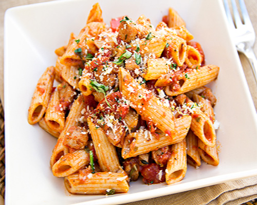

Chronicles Of A Young Mom
Home Page
Penne and Chicken with Spiced Tomato Sauce

Cook time: 36 mins Servings: 4
Ingredients:
- 1 teaspoon ground fennal seed
- 1 teaspoon dried basil
- 1/2 teaspoon salt
- 1/2 teaspoon ground coriander
- 1/4 teaspoon freshly ground black pepper
- 1 pound chicken breast tenders, cut into (1-inch) pieces
- 1 tablespoon olive oil
- 4 garlic cloves, minced
- 4 cups canned diced tomatoes, undrained
- 1 cup white wine
- 8 ounces uncooked penne
- 1/4 cup (1 ounce) freshly grated Parmigiano-Reggiano cheese
- 1/4 cup chopped fresh basil
Preparation:
- Combine first 5 ingredients in a small bowl; rub over chicken.
- Heat oil in a large nonstick skillet over medium-high heat. Add chicken; cook 4 minutes, turning once. Remove from heat; set aside.
- Reduce heat to medium. Add garlic; sauté 30 seconds or until garlic is soft. Add tomatoes and wine, scraping pan to loosen browned bits. Bring to a boil. Reduce heat, and simmer 15 minutes. Add chicken, and simmer 5 minutes.
- Cook pasta according to package directions, omitting salt and fat. Drain. Toss pasta with sauce in a large bowl. Sprinkle with cheese and basil.